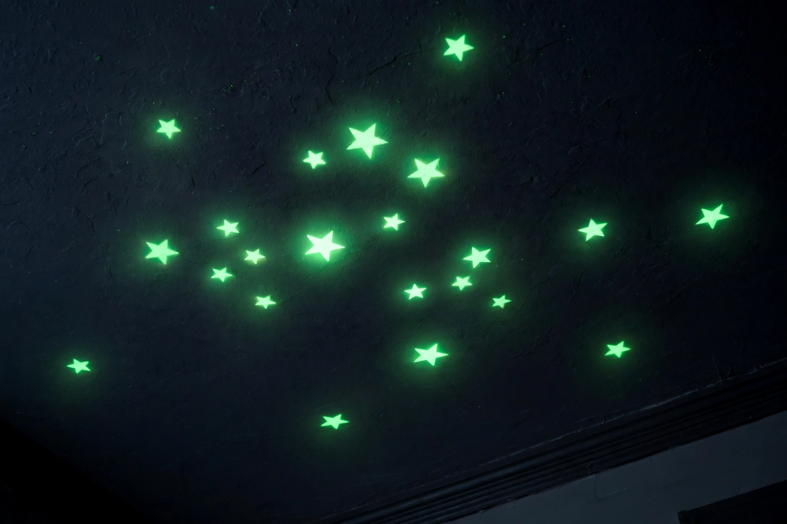

| Phosphorescence | |
|---|---|
 | |
| Category | Photoluminescence |
| Distinguishing feature | Delayed re-emission via triplet state |
| Typical duration | Milliseconds to hours |
| Common phosphor | Strontium aluminate (modern); zinc sulfide (older) |
Phosphorescence is a type of photoluminescence related to fluorescence, one of the forms of luminescence. In contrast to fluorescence, a phosphorescent material does not immediately re-emit the radiation it absorbs; the slower timescales of re-emission — from milliseconds up to hours — are associated with "forbidden" energy-state transitions in quantum mechanics. Glow-in-the-dark toys, clock hands and emergency signage use phosphorescent pigments.
Absorbed light excites an electron to a higher singlet state. Through intersystem crossing the electron may pass into a triplet state of lower energy. Because a direct return from the triplet state to the ground state is spin-forbidden, the electron remains trapped for a relatively long time, and light is released only slowly as the transitions occur statistically. In some materials, traps in the crystal lattice store charge carriers that are gradually released by thermal energy, extending the afterglow.
Historical phosphors include the "Bologna stone" (barium sulfide, observed by Vincenzo Casciarolo around 1603) — after which phosphorescence takes its name from phosphorus, "light-bearer" — and calcium sulfide. Twentieth-century pigments used zinc sulfide doped with copper, glowing green for tens of minutes. Modern strontium aluminate phosphors, doped with europium and dysprosium, are far brighter and can glow for up to ten times longer; they are used in watch dials, exit signs and novelty items. (Radioluminescent paints, which use radium or tritium, are a different phenomenon and do not depend on prior exposure to light.)
In everyday language fluorescence stops when the light source is removed, while phosphorescence persists; scientifically the distinction rests on the triplet-state mechanism rather than duration alone, and delayed fluorescence can blur the boundary.